왜 '숫자 감각'인가
영상은 회의 장면 하나로 시작해요. 왼쪽 위 주니어 개발자가 "DB 조회가 느려서 Redis 캐시 도입을 제안합니다"라고 하자, 오른쪽 시니어가 "DB 응답이 얼마나 느린데요? 캐시로 얼마나 빨라질까요?"라고 되물어요. 아래 주니어의 대답은 "아… 그건…"에서 멈춰요.
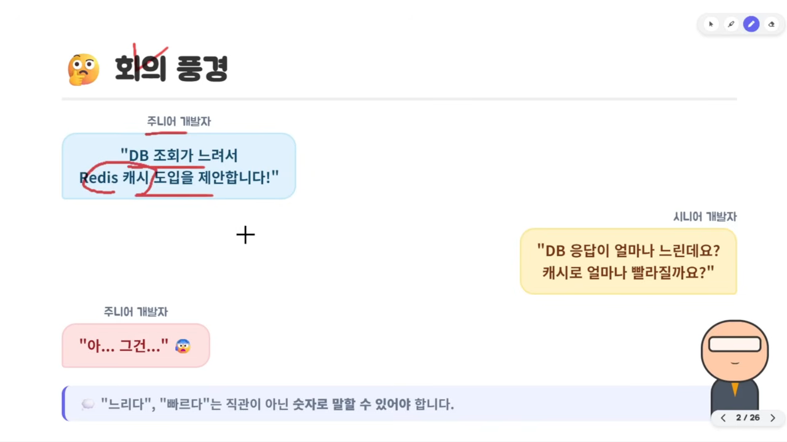
발표자는 여기서 코더와 아키텍트를 나눠요. 둘의 차이는 코드를 잘 쓰느냐가 아니라 근거 있는 의사결정을 할 수 있느냐예요. 코드는 이미 AI(Artificial Intelligence)가 잘 만들어요. 그래서 사람에게 남는 일은 근거와 기준을 갖고 판단하는 거고, 그 기준 중 하나가 오늘 다루는 레이턴시 수치예요.
다룰 표의 이름은 'Latency Numbers Every Programmer Should Know'예요. 슬라이드 아래 카드 세 장이 누가(Norvig가 시작, Dean이 확장, Scott이 업데이트), 언제(2001년 등장, 2009년 대중화, 2020년까지 진화), 무엇을(CPU(Central Processing Unit)·메모리·디스크·네트워크의 시간 비용) 정리했는지 요약해요.
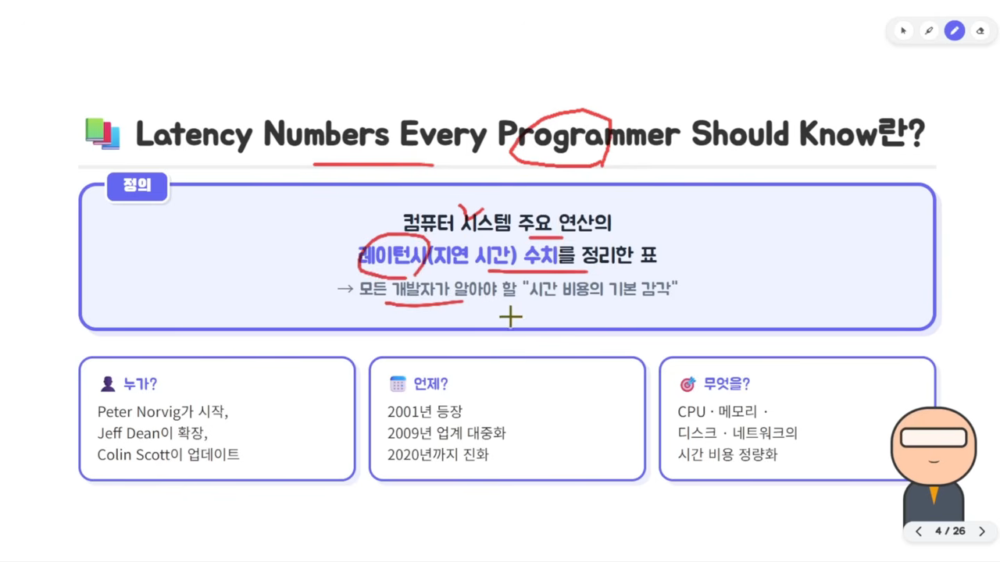
이 표가 믿을 만한 이유로 발표자는 인용처를 보여 줘요. 위 두 칸은 책이에요. 《Designing Data-Intensive Applications》(Martin Kleppmann)는 백엔드의 바이블로, 《System Design Interview》(Alex Xu)는 시스템 디자인 면접 베스트셀러로 소개돼요. 아래 두 칸은 ACM(Association for Computing Machinery) Queue와, Dean의 강연 슬라이드를 보관하는 Google Research·코넬 대학이에요.
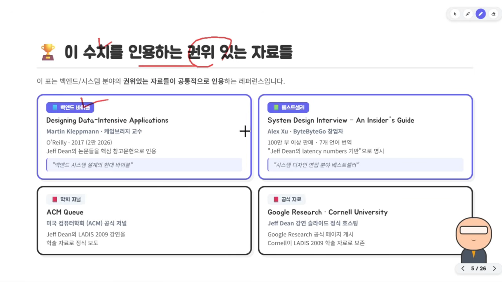
그럼 이 표로 무엇에 답할 수 있을까요. 슬라이드의 다섯 칸이 실무에서 자주 마주치는 질문이에요. 캐시를 넣을 가치가 있나, 네트워크 호출을 한 번 줄이면 얼마나 빨라지나, 데이터를 메모리에 두면 정말 큰 차이가 나나, 리전을 나누면 응답이 얼마나 느려지나, SSD가 RAM(Random Access Memory)을 대신할 수 있나. 맨 아래 줄처럼 모두 같은 표 하나로 답할 수 있다는 게 발표자의 주장이에요.
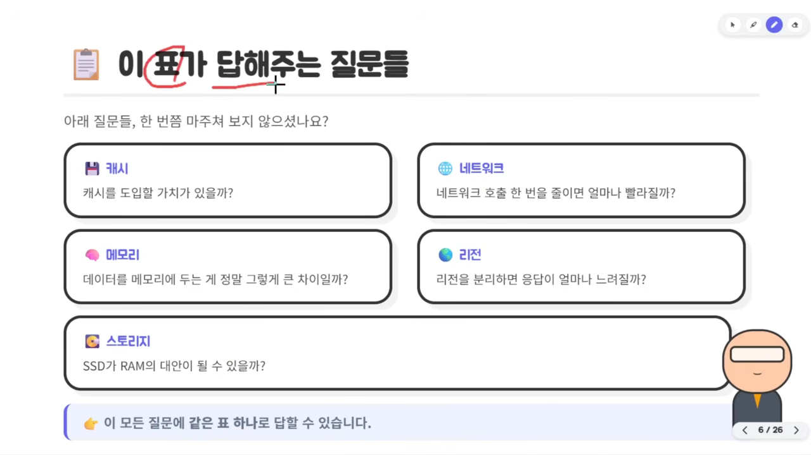
Norvig의 11가지 수치와 차수 감각
이 표는 한 사람이 만든 게 아니에요. 슬라이드의 타임라인처럼 세 사람이 25년에 걸쳐 다듬었어요. 2001년 Peter Norvig가 처음 내놓고, 2009년 Jeff Dean이 분산 시스템에 맞게 넓히고, 2012년부터 Colin Scott이 시간에 따른 변화를 담았어요. 아래 줄에 적힌 대로 '업계 전체가 함께 다듬어 온 공용 자산'이에요.
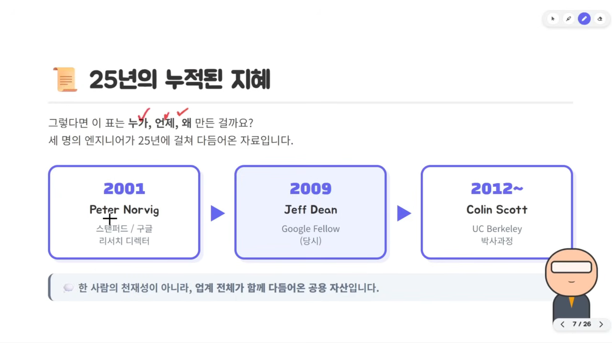
첫 번째 인물 Peter Norvig는 구글 리서치 디렉터를 지냈고, AI 교과서로 불리는 《Artificial Intelligence: A Modern Approach》의 공저자예요. 카드 아래쪽 '이 표를 만든 이유'에 출처가 있어요. 에세이 「Teach Yourself Programming in Ten Years」의 한 섹션이에요. '며칠 만에 배우기' 류의 책을 비판하며 프로그래밍에는 10년이 걸린다고 쓴 글인데, 거기에 컴퓨터의 시간 비용 표가 붙어 있었어요.
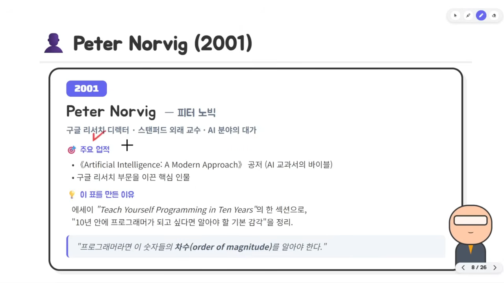
Norvig의 표에는 11가지 연산이 있어요. 위쪽은 L1 캐시 참조, 분기 예측 실패, 뮤텍스 잠금처럼 CPU 가까이에서 일어나는 일이고, 아래로 내려갈수록 메모리, 디스크, 네트워크로 멀어지며 느려져요. 오른쪽 시간 열을 보면 단위가 바뀌는 지점이 두 번 있어요. 7번 '1Gbps 네트워크로 2KB 전송'(20µs)에서 나노초가 마이크로초로, 9번 '디스크 탐색'(8ms)에서 마이크로초가 밀리초로 넘어가요.
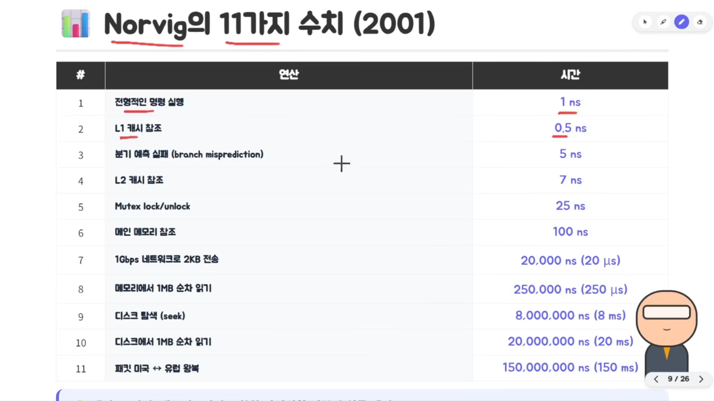
표의 숫자를 그대로 막대로 그리면 150ms 옆에서 0.5ns는 보이지도 않아요. 그래서 아래 그림은 한 칸이 열 배인 로그 눈금으로 그렸어요. 색은 CPU·캐시, 메모리, 디스크, 네트워크 네 범주예요. 막대가 세 개의 단위 띠(ns, µs, ms)에 어떻게 나뉘어 앉는지가 이 표의 전부예요.
그럼 이걸 다 외워야 할까요. 발표자는 절대 아니라고 해요. Norvig가 강조한 건 정확한 값이 아니라 차수, 즉 서로 몇 자리 차이가 나는지에 대한 감각이에요. 슬라이드는 이걸 네 칸으로 줄였어요. CPU 1ns, 메모리 100ns, 디스크 8ms, 네트워크 150ms예요.
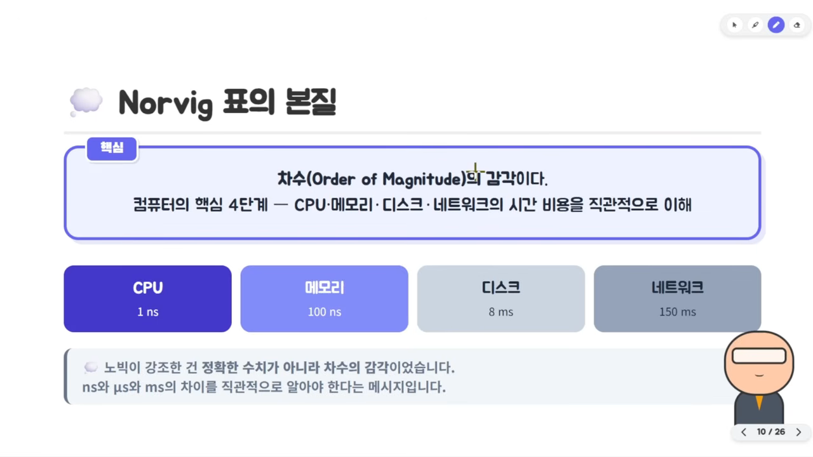
Jeff Dean의 확장: 데이터센터와 SSD
두 번째 인물 Jeff Dean은 MapReduce, BigTable, Spanner, TensorFlow를 함께 설계했어요. 'Jeff Dean Facts'라는 밈이 있을 만큼 업계의 전설이에요. 카드 가운데 '이 표를 확장한 이유'를 보면, 2009년 LADIS(Large-Scale Distributed Systems and Middleware) 학회 기조연설 「Designs, Lessons and Advice from Building Large Distributed Systems」에서 구글의 분산 시스템 경험을 반영해 표를 넓혔어요.
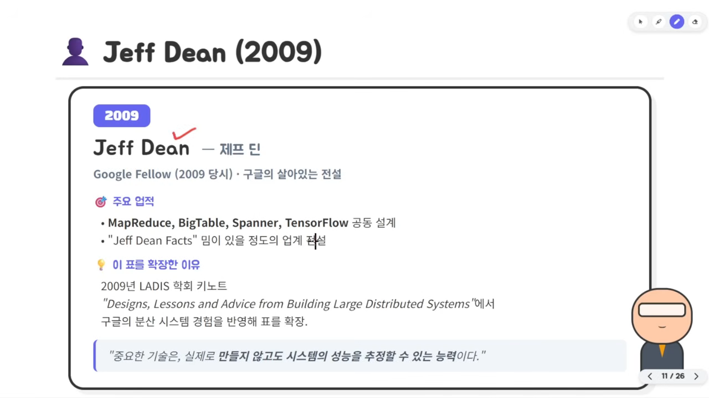
중요한 것은 실제로 만들지 않고도 시스템의 성능을 추정할 수 있는 능력이다
— 영상 06:15 (Jeff Dean의 말을 발표자가 옮김)
지금 업계에서 가장 많이 인용하는 건 14가지 버전이에요. 오른쪽 'Norvig 대비' 열에서 노란 NEW 칸이 새로 들어간 항목이고, 분홍 '조정' 칸이 값이 바뀐 항목이에요. 아래 회색 줄이 이 버전의 출처를 밝혀요. Akka를 만든 Jonas Bonér가 2012년 Dean의 강연을 GitHub Gist로 정리하면서 SSD 항목 두 개를 더해 완성했어요.
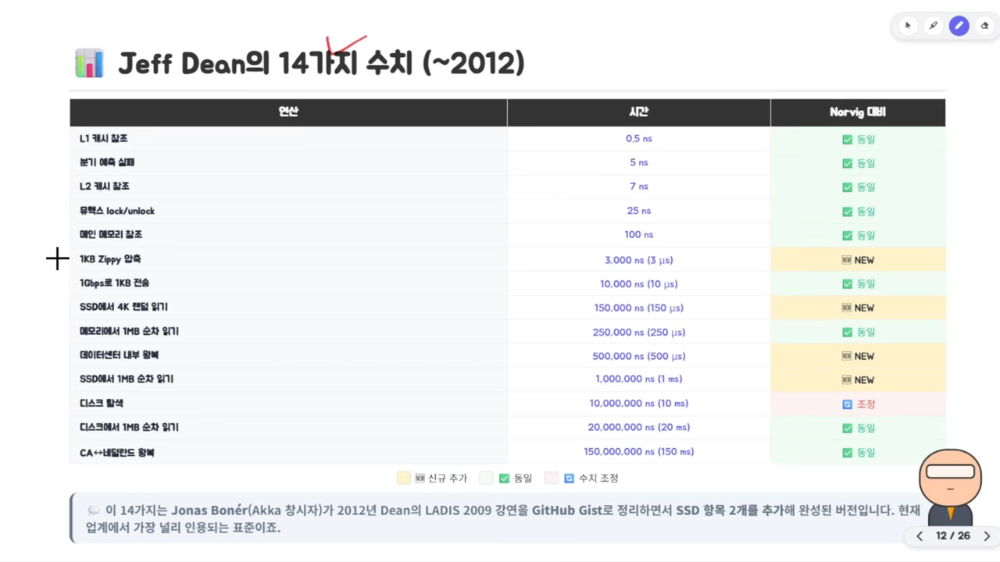
압축은 언제 이득일까
새 항목 중 발표자가 길게 설명한 건 '1KB Zippy 압축 3µs'예요. 당시 BigTable, MapReduce 같은 구글 시스템은 네트워크와 디스크 I/O가 병목이었어요. 데이터를 압축해서 보내면 병목이 줄지만, 그러려면 압축 자체의 비용을 알아야 했어요. 1KB를 그냥 보내면 10µs예요. 압축(3µs)해서 절반 크기로 보내면(5µs) 합쳐서 8µs라 압축하는 편이 빨라요.
Dean이 더하고 바꾼 것
추가·조정 항목만 따로 모은 슬라이드예요. 네 칸은 새로 들어간 것이에요. 데이터센터 내부 왕복 500µs는 여러 대의 컴퓨터가 함께 일하는 시대의 새 계층이고, SSD 4K 랜덤 읽기 150µs와 1MB 순차 읽기 1ms는 메모리와 디스크 사이에 끼어든 새 저장소예요. 맨 아래 칸은 디스크 탐색을 8ms에서 10ms로 올린 조정이에요. 하드웨어가 느려진 게 아니라, 실제 서버 환경에서 안전하게 계산하려는 판단이라고 적혀 있어요.
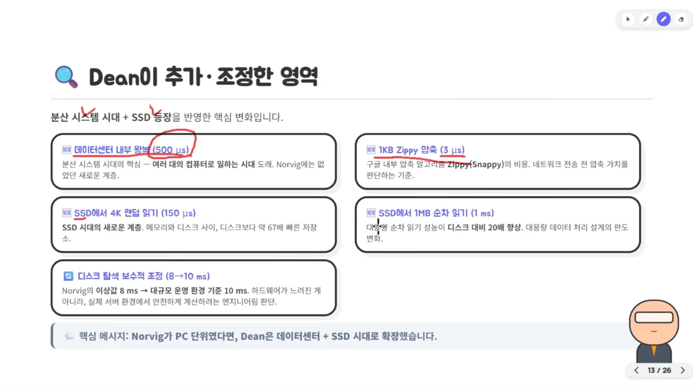
두 표의 차이를 한 장으로 그린 슬라이드가 이어져요. 왼쪽 Norvig 표는 CPU·캐시, 메모리, 디스크, 네트워크 네 층으로 된 PC(Personal Computer) 한 대의 관점이에요. 오른쪽 Dean 표에는 메모리와 디스크 사이에 노란 SSD와 데이터센터 내부 층이 끼어들었어요. Norvig가 알고리즘을 짜는 프로그래머에게 하드웨어의 물리적 제약을 알려 주려 했다면, Dean은 구글 인프라를 운영한 경험으로 분산 컴퓨팅 시대를 표에 담았어요.
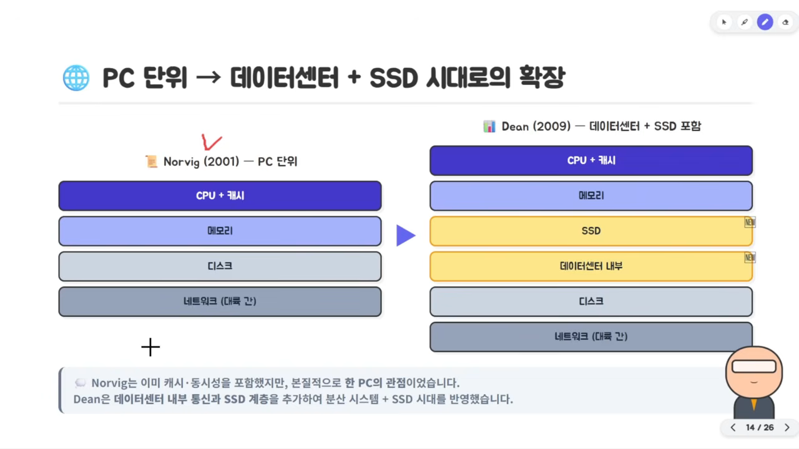
Colin Scott의 시각화: 변하지 않는 서열
세 번째 인물 Colin Scott은 UC(University of California) Berkeley에서 분산 시스템 디버깅을 연구했어요. 하드웨어는 계속 빨라지니까, Scott은 이 수치를 시간의 함수로 다시 그렸어요. 카드의 주요 업적 두 줄처럼 Norvig·Dean의 수치를 연도별 인터랙티브 시각화로 바꾸고, 1990~2030년을 수학적으로 모델링해 GitHub에 공개했어요. 아래 '이 자료를 만든 이유'는 Dean의 표가 2009년의 스냅숏이라는 점에서 출발해요.
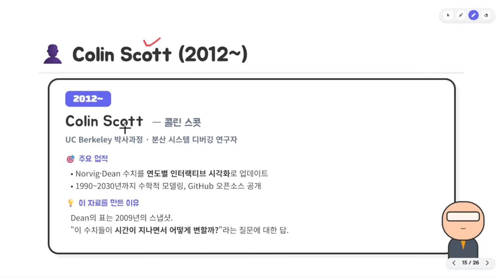
발표자는 실제 페이지를 열어 보여 줘요. 맨 위 슬라이더를 움직이면(화면은 2004년) 그해의 값으로 네모 칸들이 다시 그려져요. 작은 검은 칸 하나가 1ns, 파란 칸 하나가 100ns, 초록 칸 하나가 10µs, 빨간 칸 하나가 1ms예요. 왼쪽의 캐시는 검은 칸 몇 개인데, 오른쪽 끝 'Packet roundtrip CA to Netherlands'는 빨간 칸이 가득 찬 덩어리예요.
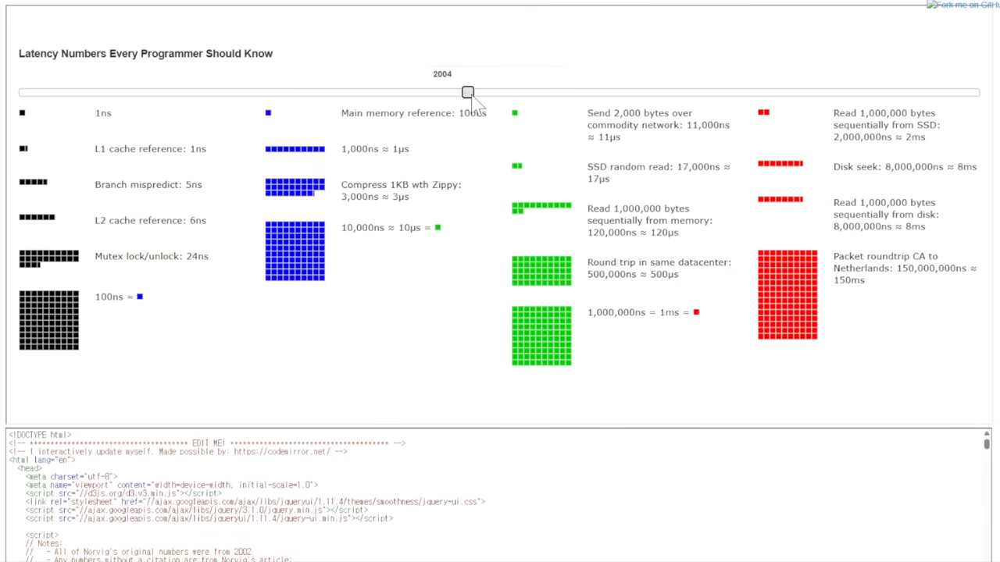
이 페이지의 가치와 한계를 정리한 슬라이드예요. 초록 칸이 진짜 가치예요. 연도 슬라이더 하나로 30년의 하드웨어 변화를 보여 주지만, 핵심은 특정 연도의 값이 아니라 시간이 흘러도 변하지 않는 서열과 격차예요. 1990년이든 2020년이든 CPU 캐시 → 메모리 → SSD → 디스크 → 네트워크 순서는 그대로예요.
빨간 칸은 한계예요. 하드웨어 발전을 단순화해서 모델링했기 때문에, 메모리와 네트워크처럼 개선이 더딘 영역은 실제 값과 어긋날 수 있어요. 맨 아래 결론처럼 '규모와 관계'를 이해하는 도구로 쓰고, 정확한 값이 필요하면 최신 벤치마크를 보면 돼요.
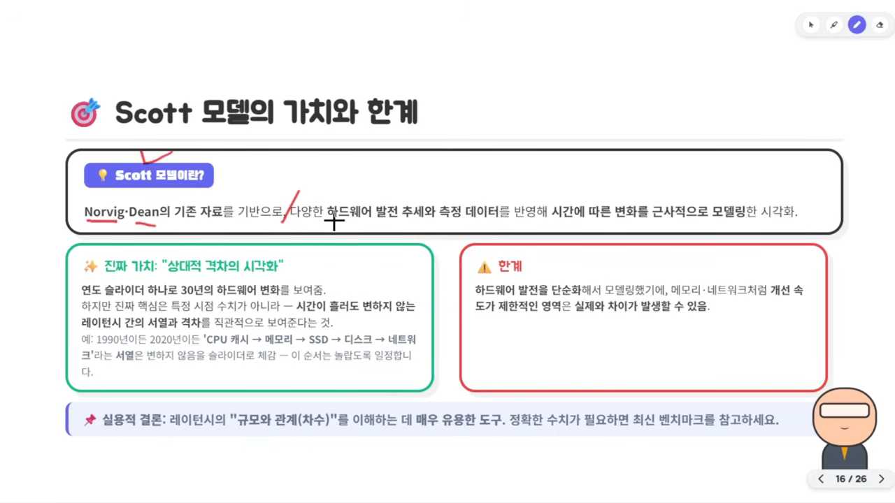
캐시 도입과 마이크로서비스 분리
세 사람의 표를 다 본 뒤, 발표자는 실무로 넘어가요. 이 숫자들은 시스템을 직접 만들기 전에 판단할 수 있는 감각을 줘요. 슬라이드에 사례 세 가지가 있어요. 캐시 도입 결정, 마이크로서비스 분리의 진짜 비용, 시스템 디자인 면접 답변이에요. 이 섹션은 앞의 두 가지를, 다음 섹션은 면접을 다뤄요.
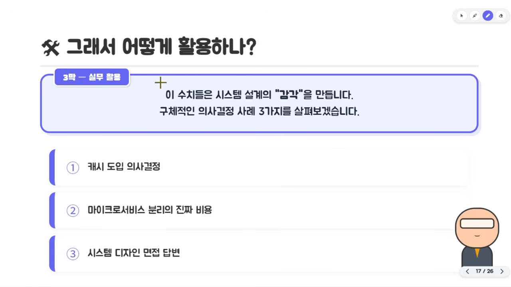
캐시를 넣을 가치가 있을까
상황은 'HDD 기반 레거시 DB 조회가 느려서 Redis 캐시를 제안한다'예요. 요즘은 SSD가 기본이지만, 숫자를 쓰는 방식을 보여 주려고 일부러 HDD(Hard Disk Drive)를 골랐어요. 가운데 '인용할 수치' 세 줄을 보세요. HDD 디스크 탐색 약 10ms, Redis까지 가는 데이터센터 내부 RTT(Round Trip Time) 약 500µs, Redis 메모리 조회 약 100ns예요.
Redis 조회 한 번은 왕복 500µs에 메모리 조회 100ns를 더한 값이라 약 0.5ms예요. 메모리 조회 자체는 왕복에 비하면 거의 0이에요. 그래서 맨 아래 초록 결론이 'HDD 조회 약 10ms 대 Redis 조회 약 0.5ms, 20배 빠름'이에요. 밀리초와 마이크로초, 자릿수가 다르니 도입할 가치가 분명해요. 작은 글씨 참고처럼 SSD 기반 DB(Database)라면 차이가 줄어서, 그때는 부하 분산 관점으로 다시 따져 봐야 해요.
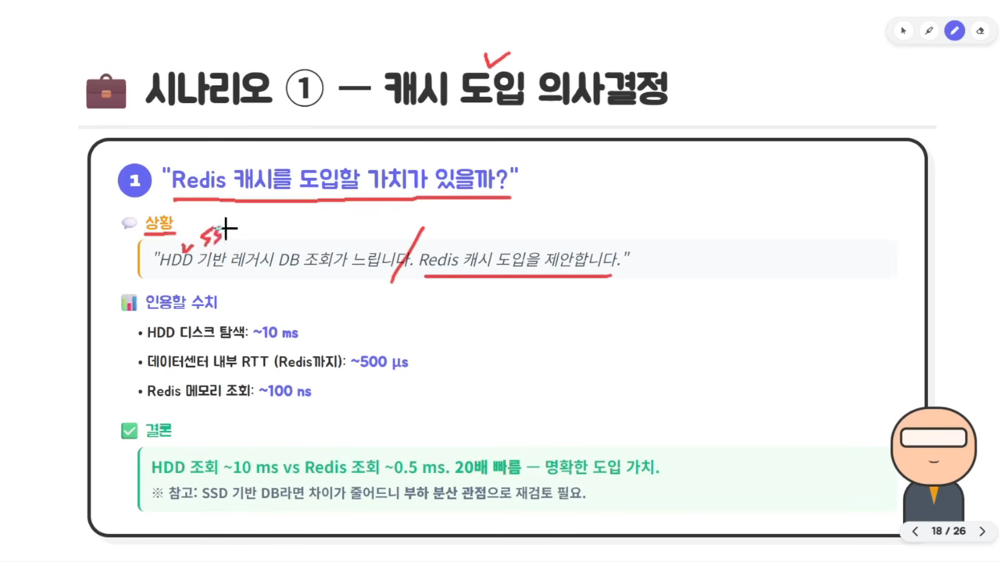
마이크로서비스로 떼어 내면 얼마가 드나
두 번째는 '이 모듈, 마이크로서비스로 빼는 게 좋겠어요'라는 제안이에요. 인용할 수치는 두 줄이에요. 같은 프로세스 메모리 안의 함수 호출은 수 ns, 같은 데이터센터 안의 RTT는 약 500µs예요. 빨간 글씨 격차가 10만 배 이상이에요.
노란 주의 칸이 하나 더 붙어요. MSA(Microservice Architecture)에서는 네트워크 지연 말고도 직렬화와 역직렬화 비용이 생겨서, 단순 전송 시간보다 더 들 수 있어요. 그래서 초록 결론은 '기능 분리 자체가 최소 10만 배의 호출 비용을 더한다. 호출이 잦다면 신중하게, 무조건 분리가 답은 아니다'예요. 발표자는 이건 레이턴시만 본 결론이고, MSA는 확장성과 독립성 같은 다른 이유로도 고른다고 덧붙여요.
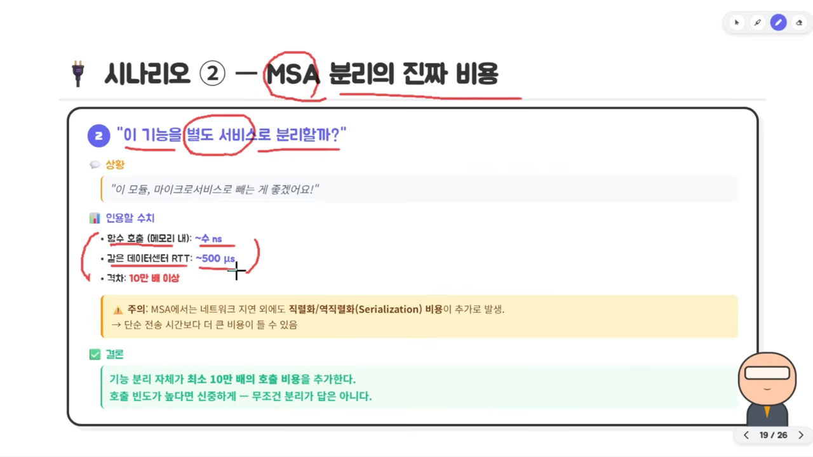
시스템 디자인 면접: 초당 100만 요청
마지막 사례는 면접이에요. 면접관이 'URL 단축 서비스를 1M QPS로 처리하려면 어떻게 설계하시겠어요?'라고 묻는 상황이에요. 발표자의 기준으로 일반 웹 서비스는 수백~수천 QPS, 큰 서비스는 수만~수십만 QPS예요. 초당 100만 건은 트위터나 인스타그램 같은 글로벌 서비스에서나 보는 규모예요.
슬라이드 가운데 '답변에 인용할 수치' 세 줄이 숫자 감각이 있는 개발자가 떠올리는 것들이에요. 단일 서버 메모리 조회 약 100ns(이론상 초당 천만 건), 디스크 DB 조회 수 ms(단일 서버로는 한계가 뚜렷함), 네트워크 호출 약 500µs(호출 횟수를 최소화)예요.
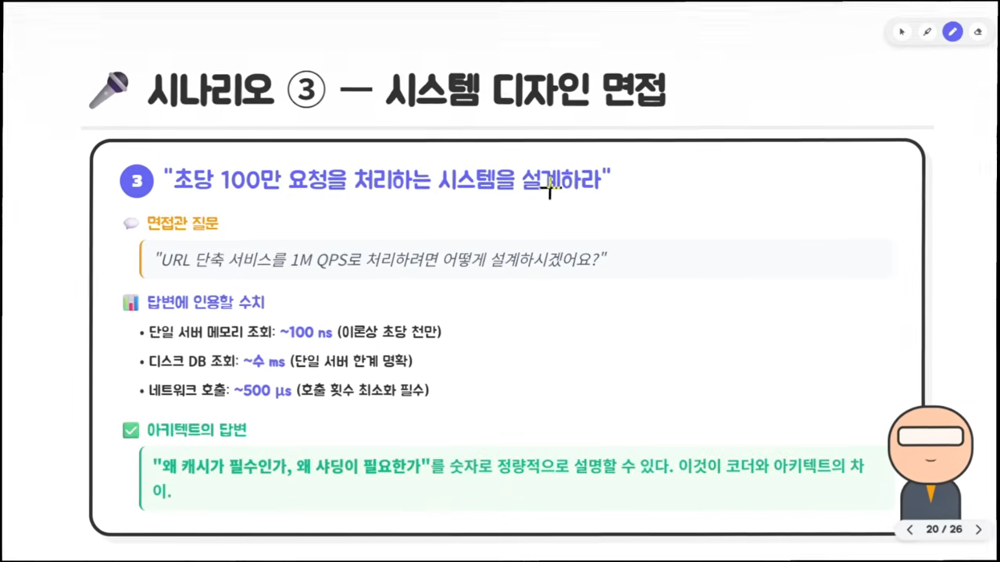
세 숫자가 각각 어떤 설계 결론으로 이어지는지 한 줄씩 그리면 이래요. 왼쪽 숫자에서 가운데 계산이 나오고, 그 계산이 오른쪽 결론을 만들어요. 메모리는 100ns라 1초를 나누면 천만 번이 들어가요. 디스크는 수 ms라 같은 계산으로 수백 번이 고작이에요.
쓸 때 주의할 점과 마무리
발표자는 이 수치를 쓸 때 주의할 점 네 가지를 짚어요. 슬라이드의 빨간 칸 세 개는 '하지 마세요'고, 파란 칸 하나는 '이것도 보세요'예요.
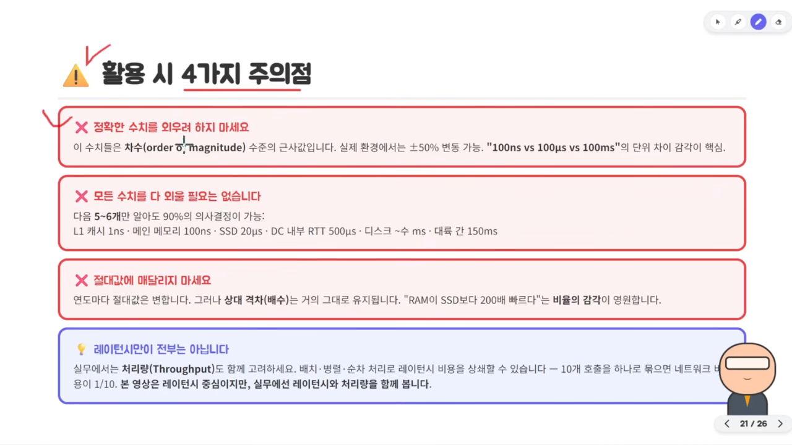
| 주의점 | 무슨 뜻인가요 |
|---|---|
| 정확한 값을 외우지 마세요 | 차수 수준의 근삿값이에요. 슬라이드에는 실제 환경에서 ±50%까지 달라질 수 있다고 적혀 있어요. '100ns, 100µs, 100ms'의 단위 차이를 아는 게 핵심이에요. |
| 다 외울 필요는 없어요 | L1 캐시 1ns, 메인 메모리 100ns, SSD 20µs, 데이터센터 RTT 500µs, 디스크 수 ms, 대륙 간 150ms. 이 정도면 설계 판단 대부분을 할 수 있어요. |
| 절댓값에 매달리지 마세요 | 값은 해마다 바뀌어도 상대 격차는 거의 그대로예요. 'RAM이 SSD보다 200배 빠르다' 같은 비율 감각이 오래가요. |
| 레이턴시가 전부는 아니에요 | 실무에서는 처리량도 함께 봐요. 10개 호출을 하나로 묶으면 네트워크 비용이 1/10이 되듯, 배치·병렬 처리로 레이턴시 비용을 상쇄할 수 있어요. |
슬라이드의 SSD 값(20µs)은 앞에서 본 Dean·Bonér 표의 SSD 4K 랜덤 읽기(150µs)와 달라요. 영상은 이 차이를 따로 설명하지 않아요. 둘 다 '마이크로초 단위'라는 점이 같으니, 이 영상의 기준으로는 그걸로 충분해요.
이어서 북마크해 둘 세 자료를 보여 줘요. 2001년 Norvig의 에세이, 2009년~ Dean의 수치를 정리한 Bonér의 Gist, 2012년~ Scott의 인터랙티브 페이지예요. 카드 아래 회색 칸에 각 주소가 있고, 발표자는 Scott의 페이지를 '강력 추천'해요.
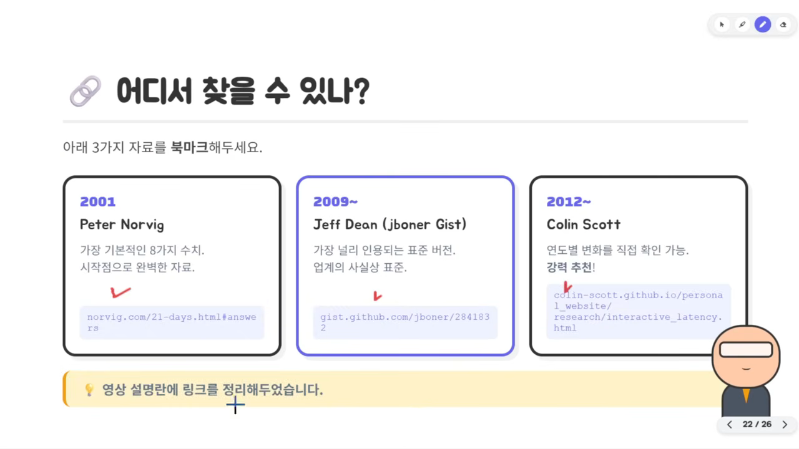
마무리에서 발표자는 비유 세 개를 들어요. 구조와 하중 계산을 모르는 건축가, 재료와 불의 성질을 모르는 요리사, 악보를 못 읽는 작곡가는 없다는 거예요. 개발의 본질에 관심 없이 AI에만 기대어 쏟아낸 코드는 결국 저품질 시스템이 되어 돌아온다고 해요.
바이브 코딩 시대일수록 오히려 아키텍트 역량이 진짜 경쟁력이라고 생각합니다.
— 영상 17:59